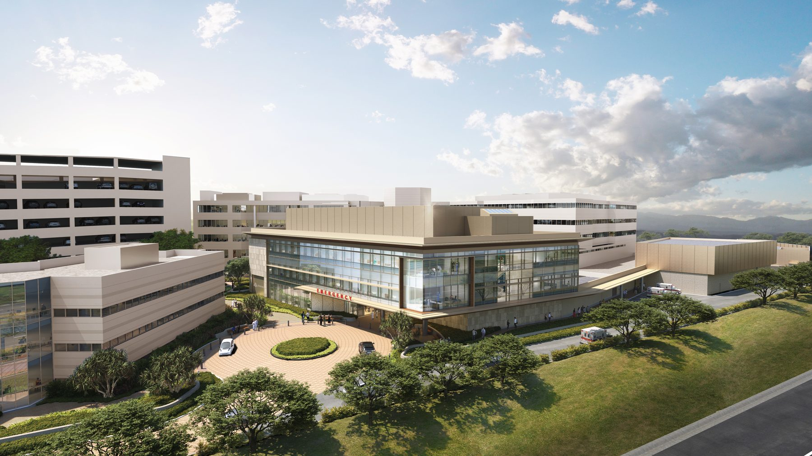
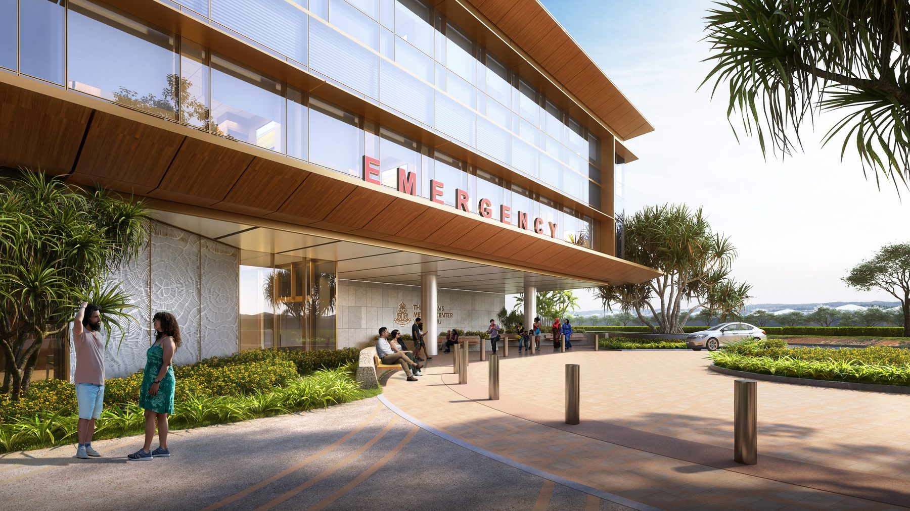
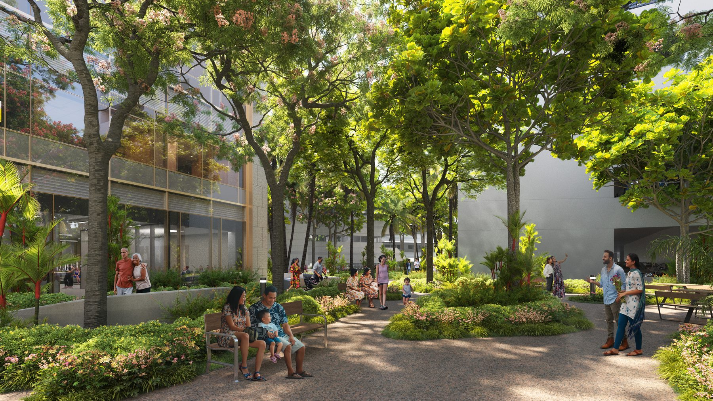
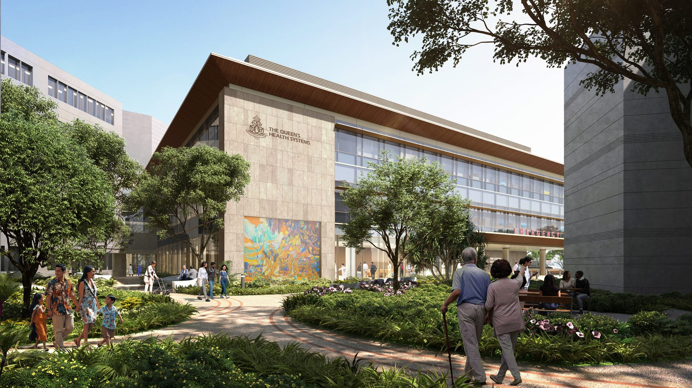
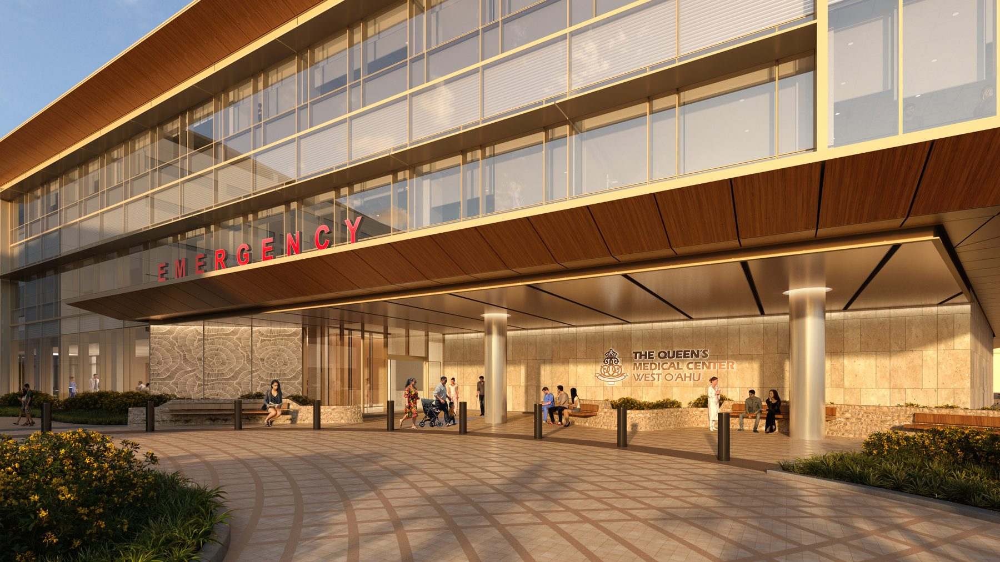
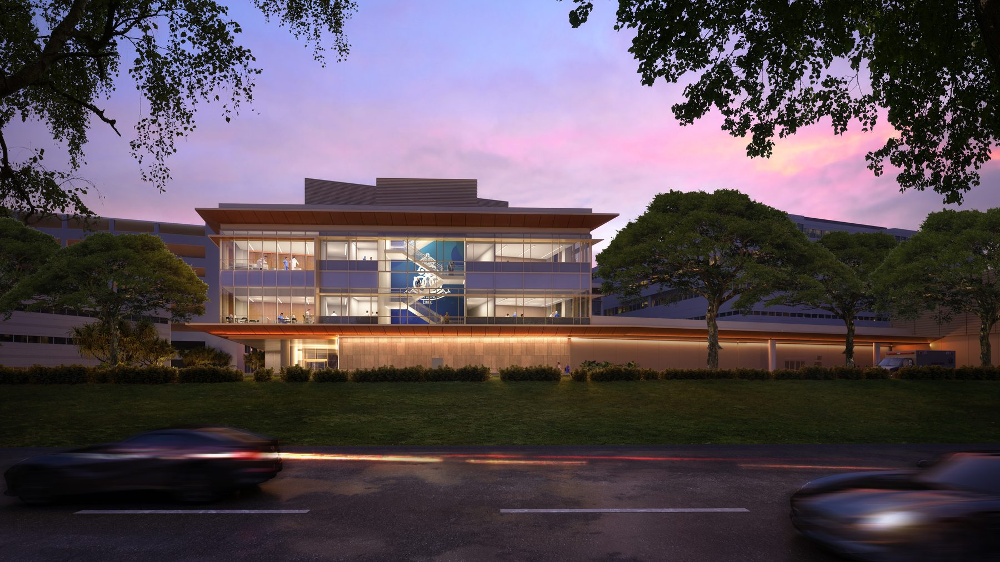
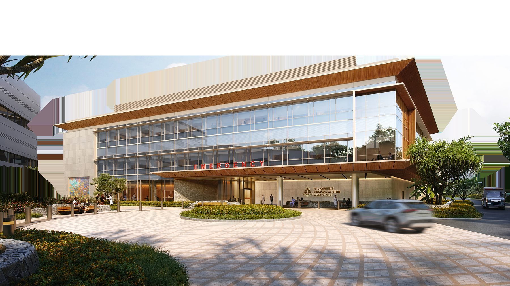
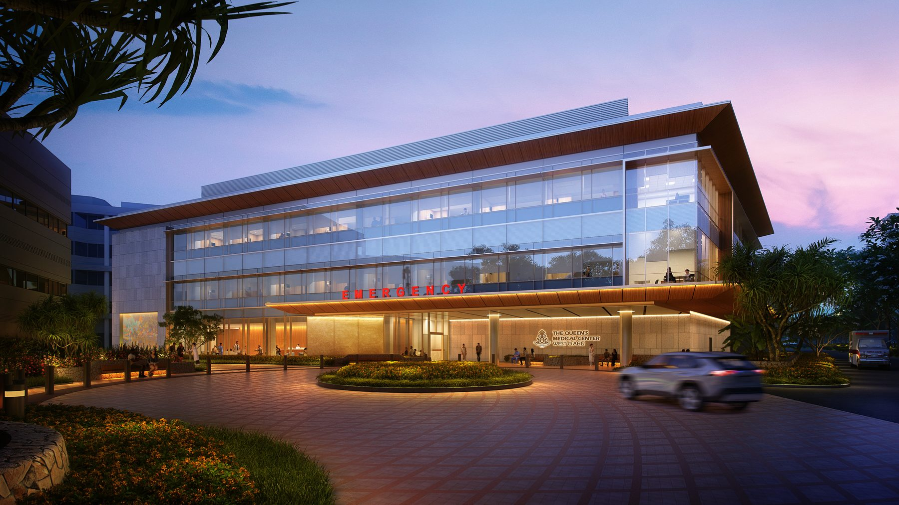

HKS Professional Work
ED Expansion — Navigating Constraints, Honoring Culture
Queen's Medical Center West O'ahu is located in the heart of the 'Ewa District near the coast of Mamala Bay. The project site is adjacent to the recently approved new town center of Ho'opili, West O'ahu's newest transit-oriented mixed-use neighborhood.
The roots of wellness in Hawaiian culture begin with place. 'Aina hanau, or "land of birth," speaks to the deep spiritual and genealogical ties people hold with the 'aina. Recognizing the site's historical layers — from ancient lo'i systems to plantation transformations to its role in internment during WWII — this project means healing land, community, and spirit together.

Aerial view — the medical center within its landscape context

Hale — Entrance and Gathering: deep overhangs provide shade and establish a transition between outside and inside
Inspired by the traditional concept of the hale as a place of shelter and connection, the design emphasizes warmth, visibility, and human interaction as part of the healing experience. Healthcare planning follows a split-flow model that accelerates decision-making at intake: patients are triaged by acuity and guided into specific treatment tracks.
The large central volume at the upper level acts as a light monitor, allowing soft ambient daylight to penetrate into the core of the building. Patient rooms are organized along the perimeter to maximize access to daylight and exterior views, supporting circadian rhythms and well-being.

Courtyard — connecting healthcare with the natural landscape

Cultural mural wall — art and heritage integrated into the healthcare environment

Lanai — healing outdoor spaces rooted in Hawaiian landscape traditions

Approach from the highway — a visible presence in the community


Night view — the building as a beacon of care in the community